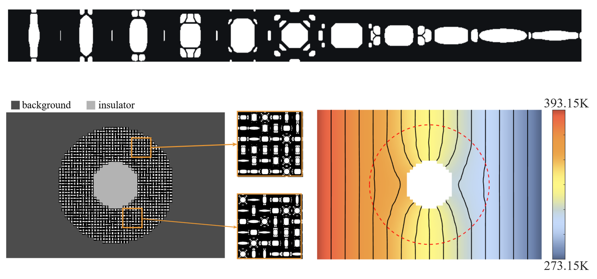
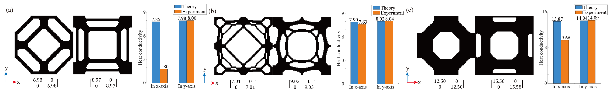

Topology Optimization of Compatible Thermal Microstructures
| Tianjie Chen Xiaoya Zhai Zheng Zhang Ligang Liu Xiao-Ming Fu | ||
| University of Science and Technology of China | ||
International Journal of Heat and Mass Transfer , 2025.
|
 Figure 1: Orthogonal anisotropy compatible thermal microstructure and thermal cloak design. |
|
|
Abstract |
Thermal microstructures are arranged periodically or in gradients to create thermal management systems. Ensuring connectivity is
a critical challenge in designing multiple thermal microstructures for multiscale applications. This is an important issue that has not
yet been systematically studied in a quantitative manner. In this work, we introduce the concept of thermal compatibility. It refers
to the ability of different microstructures to work together effectively in thermal systems. Thermal compatibility ensures efficient
heat transfer while minimizing thermal resistance. To address this, we propose a novel framework incorporating thermal resistance
into the topology optimization model with the constraint of predefined thermal conductivity tensors to generate compatible thermal
microstructures. Our optimization model considers the compatibility of adjacent microstructures and extends to mutual compatibility. Moreover, it accounts for both isotropic and orthogonal anisotropic thermal microstructures. When the thermal microstructures
exhibit good compatibility, the results from both full-scale and homogenization analyses are consistent. We further demonstrate the
applicability of our method through two thermal-related multiscale design examples: thermal dissipation and thermal cloak design.
|
| Keywords |
Topology optimization, compatible thermal microstructures, multiscale optimization |
| Motivation |
|
| Methods |
Firstly, To better investigate the connectivity of thermal microstructures, we identify thermal compatibility between different microstructures as a critical issue. Here, compatibility implies that the design of microstructures ensures continuous and efficient heat transfer without significant losses or disruptions. By comparing the thermal conductivity tensors analyzed by the series and parallel model in macroscale and by effective homogenization on the combination of different cells ,We quantitatively analyze the compatibility between different thermal microstructures, and discover the relationship between compatibility of different thermal microstructures and thermal resistance of the combined thermal microstructure.

Figure 2: Comparison of three pairs of microstructures: (a) with totally no connectivity, (b) with good connectivity, (c) with partial connectivity. Their connectivity in the x-axis direction is different. The charts on the right report the thermal conductivity of combined microstructures in two directions. It can be suggested that poor compatibility will lead to decrease of thermal conductivity ratio in the series direction along which thermal microstructures are combined.
Furthermore, we incorporate compatibility into topology optimization of thermal microstructure design and generate a series of different thermal microstructures with excellent compatibility that are suitable for thermal-related multiscale designs.
Figure 3: Topology optimized series of thermal microstructures: (a) without consideration of compatibility; (b) with consideration of compatibility between adjacent cells; (c) with consideration of compatibility between every two different cells. |
| Paper |
|
| Software |
Code |
| Ack |
|
| BibTex |
@article {Chen2024CompatibleThermal, title = {Topology Optimization of Compatible Thermal Microstructures}, author = {Chen, Tianjie and Zhai, Xiaoya and Liu, Ligang and Fu, Xiao-Ming} journal = {International Journal of Heat and Mass Transfer}, volume={}, number={}, pages={}, year = {2025} } |
Copyright © USTC GCL